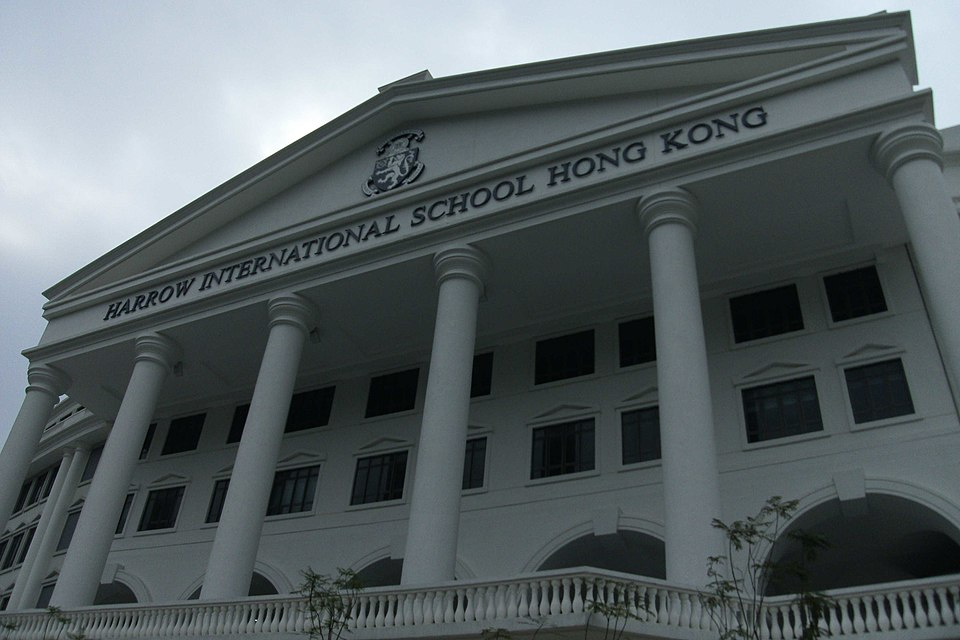

해로 인터내셔널 스쿨 홍콩 본관 · 사진: 水水 / Wikimedia Commons, CC BY-SA 3.0
해로 인터내셔널 스쿨 홍콩(Harrow International School Hong Kong) — 툰문이라는 위치, 통학이냐 주중 기숙이냐
1. 어떤 학교인가
· 개교 — 2012년 9월 문을 연 것으로 알려져 있습니다. 홍콩에서 처음 생긴 영국식 기숙(보딩) 국제학교로 소개됩니다.
· 위치 — 홍콩 신계 서부 툰문(Tuen Mun)의 칭잉로드(Tsing Ying Road), 이른바 골드코스트 인근으로 안내됩니다.
· 학년 — 만 3세부터 18세까지, 영국식으로 세면 Early Years부터 Year 13까지를 한 학교에서 받는 구조로 알려져 있습니다.
· 교육과정 — 영국 국가교육과정(UK National Curriculum)을 따르고, 중등에서 GCSE, 식스폼(Sixth Form)에서 A-Level로 마무리하는 것으로 안내됩니다.
· 기숙 — 프렙 스쿨 Year 6부터 주중 기숙(일요일 저녁 입사 ~ 금요일 저녁 귀가) 형태로 운영되는 것으로 안내되고 있습니다.
· 캠퍼스 — 초승달 모양으로 지어진 건물과 목적에 맞춰 만든 시설들이 특징으로 소개됩니다.
※ 학비·정원·합격률·재학생 수처럼 해마다 바뀌는 수치는 이 글에서 다루지 않습니다. 학년 구성·기숙 운영·통학 버스 노선도 바뀔 수 있으니 학교 요강을 직접 확인하세요.
2. 핵심 하나 — 이 학교는 "위치"가 먼저입니다
홍콩 학교를 고를 때 한국 부모님이 가장 자주 놓치시는 것이 거리 감각입니다. 홍콩 전체 면적이 넓지 않으니 어디든 비슷하겠거니 생각하시는데, 실제로는 홍콩섬 중심 ↔ 툰문이 출퇴근 시간대에 상당한 이동 시간이 되는 구간입니다.
그래서 이 학교는 다음 두 가정에게 성격이 완전히 다르게 다가옵니다.
· 툰문·툰문 인근에 거주가 가능한 가정 — 통학이 자연스럽습니다. 오히려 도심 학교보다 등하교가 편할 수 있습니다. 회사 사택이나 거주지를 아직 정하지 않으셨다면, 학교를 먼저 정하고 집을 그 생활권에 맞추는 순서가 가능합니다.
· 홍콩섬·동구룡에 거주가 정해진 가정 — 매일 왕복 이동 시간이 아이의 저녁을 통째로 먹습니다. 이때 학교가 내놓는 답이 주중 기숙입니다.
정리하면, 이 학교의 첫 질문은 "우리 아이에게 맞는 커리큘럼인가"가 아니라 "우리 집 위치에서 이 학교를 어떤 형태로 다닐 것인가"입니다. 이 순서를 뒤집으면 입학한 뒤에 통학 문제로 다시 고민하게 됩니다.
3. 핵심 둘 — 홍콩에서 "영국식으로 끝까지" 가는 선택
홍콩의 국제학교를 살펴보시면 IB 디플로마로 마무리하는 학교가 눈에 많이 띕니다. 그런데 이 학교는 GCSE를 거쳐 A-Level로 끝납니다. 이 차이는 생각보다 실질적입니다.
· A-Level은 보통 소수 과목을 깊게 가는 구조입니다. 잘하는 과목이 뚜렷하고 전공 방향이 비교적 정해진 학생에게 유리하다고 알려져 있습니다.
· IB 디플로마는 여러 영역을 고루 가져가는 구조입니다. 아직 진로를 좁히지 않았거나 글쓰기·활동까지 함께 쌓고 싶은 학생에게 맞습니다.
· 두 과정의 구조 차이는 A-Level 과목 선택 가이드와 IB DP 점수 완전정복에 따로 정리해 두었습니다. 그 앞 단계인 GCSE·IGCSE 과목 고르기는 IGCSE 과목 선택 가이드를 보세요.
그러니 이 학교를 고려하신다면, 아이가 고등학교 마지막 2년에 어떤 형태로 공부하는 편이 맞는지를 미리 생각해 두시는 것이 좋습니다. 중학교 시기에 학교를 정할 때는 잘 보이지 않지만, Year 10~11(GCSE)에 들어서면 바로 현실이 됩니다.
4. 홍콩 네 학교 비교 — 어디가 어떻게 다른가
홍콩의 영어권 학교들은 언뜻 비슷해 보여도 마무리 과정·학년 구성·위치에서 갈립니다. 옆에 놓고 보시면 판단이 빨라집니다.
| 항목 | 해로 홍콩 | 켈릿 스쿨 | 디스커버리 칼리지 | 슈루즈베리 홍콩 |
|---|---|---|---|---|
| 계열 | 영국계(해로 계열) | 영국계 | ESF(영어 교육 재단) | 영국계 |
| 개교 | 2012년 | 1976년 | 2008년 | 2018년 |
| 학년 구성 | 만 3~18세 전 과정 | 초·중·고 전 과정 | Year 1~13 한 학교 | 초등 + 중등 신설 중 |
| 마무리 과정 | GCSE → A-Level | IGCSE → A-Level | IB 디플로마 | 현재 해당 학년 없음 |
| 기숙(보딩) | 있음(주중 기숙) | 통학 중심 | 통학 중심 | 통학 중심 |
| 위치 성격 | 신계 서부(툰문) | 홍콩섬·구룡 | 란타우섬(디스커버리베이) | 신계 동부(정관오) |
| 자세히 | 이 글 | 켈릿 스쿨 가이드 | 디스커버리 칼리지 가이드 | 슈루즈베리 홍콩 가이드 |
※ 학년 구성·개설 과정·기숙 운영은 해마다 바뀔 수 있습니다. 지원 전 각 학교 요강을 직접 확인하세요. 홍콩의 다른 형태는 홍콩국제학교(HKIS)(미국식 AP), CDNIS(IB·캐나다 졸업장), 차이니즈 인터내셔널 스쿨(이중언어 IB), 저먼스위스 인터내셔널 스쿨에 정리해 두었습니다.
5. 한국(주재원) 학생·학부모가 겪는 어려움
· 기숙이 모든 걸 해결해 줄 거라고 기대한다. 주중 기숙은 통학 시간과 저녁 생활 리듬을 정리해 줍니다. 그러나 학습 영어·과목 선택·성적 확인 통로는 그대로 부모님의 몫으로 남습니다. 오히려 아이가 집에 없는 주중에는 성적이 어떻게 가고 있는지 보이지 않게 되므로, 학교 플랫폼을 읽는 습관이 더 중요해집니다. → 학습 플랫폼·시간표 읽는 법
· Year 표기가 한국 학년과 어긋나 보인다. 영국식이라 Year로 셉니다. 학년이 내려간 것이 아니라 세는 방식이 다른 것입니다. → 국제학교 학년 체계 총정리
· GCSE 과목 선택을 늦게 고민한다. 영국식 학교에서 과목 선택은 Year 9 무렵에 시작됩니다. 그 선택이 A-Level 과목을 좁히고, A-Level 과목이 대학 전공을 좁힙니다. 한국식으로 "고등학교 가서 정하지" 하면 늦습니다.
· 생활 영어는 느는데 교과 영어가 안 는다. 회화가 빨리 늘어 부모님은 안심하시는데, 정작 점수는 교과를 읽고 설명하는 영어에서 갈립니다. → EAL(영어 지원 프로그램) · Learning Support
· 수학은 계산이 아니라 용어와 서술에서 막힌다. 한국에서 이미 배운 내용인데 알지브라·지오메트리 용어가 영어라서 못 푸는 경우가 흔합니다. 영국식 시험은 답만 적으면 단계 점수를 받지 못합니다.
· 편입 자리를 늦게 알아본다. 전 학년을 갖춘 학교일수록 학년이 올라갈수록 빈 자리가 줄어듭니다. → 편입·전학 총정리
6. 그래서 이렇게 준비합니다
🧭 먼저 — 집·학교·기숙을 한 장에 적어 본다
종이에 세 줄을 적어 보세요. ① 거주지가 정해졌는가, 아직 고를 수 있는가 ② 거주지에서 학교까지 실제 왕복 시간 ③ 그 시간을 매일 쓰고도 아이가 공부할 저녁이 남는가. 세 번째 줄이 "아니오"면 기숙이 현실적인 선택지로 올라옵니다. 이 세 줄을 들고 학교 방문이나 오픈데이에 가시면 물어볼 것이 명확해집니다. → 오픈데이·학교 방문 준비법 · 국제학교 입학 준비 총정리
📖 영어과외 — 회화가 아니라 "교과를 읽고 쓰는 영어"
영국식 학교는 지시어가 점수를 정합니다. describe·explain·evaluate·compare가 각각 무엇을 요구하는지 모르면, 내용을 알아도 엉뚱한 답을 씁니다. 그래서 지문을 요약해 말해 보기와 지시어별로 답의 형태를 바꿔 쓰기를 함께 연습합니다. 이 훈련이 GCSE 서술형과 A-Level 에세이로 그대로 이어집니다. (영어 공부법 참고)
📐 수학과외 — 한국식 풀이에 영어 용어를 붙인다
아이가 이미 아는 개념에 영어 용어를 다시 붙여 주는 작업부터 합니다. 그다음 풀이 과정을 영어 문장으로 적는 습관을 들입니다. 영국식 시험에서는 과정에 붙는 점수가 따로 있어서 답만 맞혀서는 만점이 나오지 않습니다. (알지브라 공부법 참고)
🛏️ 기숙을 택했다면 — 수업 시간을 먼저 학교에 확인한다
주중 기숙 학생은 저녁 시간이 기숙사 자습 규칙에 묶여 있습니다. 화상과외를 계획하신다면 자습 시간대와 외부 수업 허용 여부를 학교에 먼저 물어보셔야 합니다. 허용 범위가 확인되면, 주말 귀가 시간에 한 주치 과제와 피드백을 몰아 정리하는 방식으로도 충분히 굴러갑니다.
7. 홍콩의 강점 — 시차 한 시간의 화상과외
홍콩은 한국보다 한 시간 느립니다. 홍콩 오후 4시가 한국 오후 5시라, 아이의 방과 후 시간이 한국 강사진의 수업 시간과 거의 그대로 맞습니다. 여기에 툰문처럼 도심에서 떨어진 생활권일수록 화상수업의 이점이 커집니다. 학원을 찾아 다시 도심으로 이동할 필요가 없기 때문입니다. 아이의 실제 과제와 학교가 준 채점 기준을 화면에 놓고 "어느 항목에서 깎였는지"부터 확인하는 방식이 가장 빠릅니다. 홍콩 지역 사정은 홍콩 국제학교 과외와 홍콩 수학학원·영어학원 찾기에 정리해 두었습니다.
정리
해로 인터내셔널 스쿨 홍콩은 2012년 툰문 개교로 알려진 영국 국가교육과정 학교이고, 만 3세부터 18세까지를 한 학교에서 받으며 GCSE를 거쳐 A-Level로 마무리합니다. 그리고 홍콩에서 처음 생긴 영국식 기숙 학교로, Year 6부터 주중 기숙이 가능한 것으로 안내되어 있습니다. 그러니 이 학교 앞에서 하실 질문은 두 개로 좁혀집니다. "우리 집에서 통학이 되는가, 안 되면 주중 기숙을 받아들일 수 있는가." 그리고 "아이가 마지막 2년을 A-Level 방식으로 공부하는 편이 맞는가." 이 두 가지가 정해지면 나머지는 준비의 문제입니다. 30분 무료 상담으로 우리 아이가 지금 어느 구간에 있는지부터 함께 짚어 보세요.